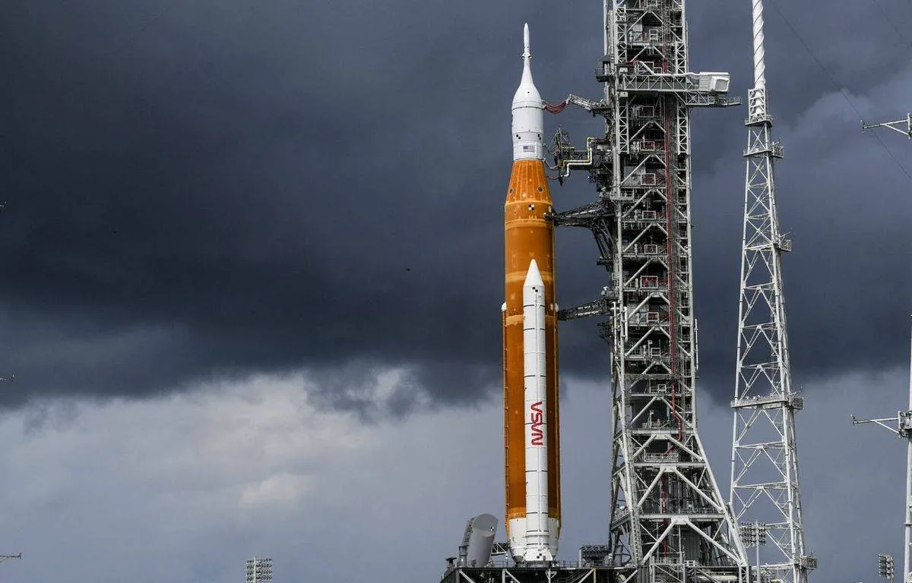

Mission Artémis : Deuxième essai pour la méga fusée de la Nasa

Après une première tentative ratée en début de semaine, la Nasa va réessayer ce samedi de faire décoller sa méga fusée vers la Lune, pour une mission test qui doit lancer son nouveau programme phare, Artémis, cinquante ans après le dernier vol d’Apollo. La fusée orange et blanche SLS, dont ce sera le baptême de l’air depuis le pas de tir 39B du centre spatial Kennedy, en Floride, est la plus puissante du monde.
Le décollage est prévu à 14h17 heure locale (20h17 heure de Paris), et reste possible au cours des deux heures qui suivent en cas de besoin. Les conditions météo sont favorables à 60 % au début de cette fenêtre de tir, puis s’améliorent peu à peu jusqu’à 80 %. « Notre équipe est prête, elle est meilleure à chaque tentative », a déclaré vendredi Jeremy Parsons, responsable des équipements au sol au centre spatial. Si les conditions météo et de matériel sont réunies, « il est clair que nous décollerons ». En cas de nouvel empêchement, le décollage pourrait éventuellement être reprogrammé à lundi ou mardi. Il faudra ensuite attendre le 19 septembre au plus tôt, en raison des positions de la Terre et de la Lune.
Le but de cette mission non habitée, nommée Artémis 1, est de vérifier que la capsule Orion, au sommet de la fusée, est sûre pour transporter à l’avenir des astronautes. Grâce à ce nouveau vaisseau, l’agence spatiale américaine entend renouer avec l’exploration humaine lointaine, la Lune étant mille fois plus éloignée de la Terre que la Station spatiale internationale. Surtout, la Nasa compte cette fois y établir une présence humaine durable, afin d’en faire un tremplin pour un voyage vers Mars.
03/09/22 à 13h23